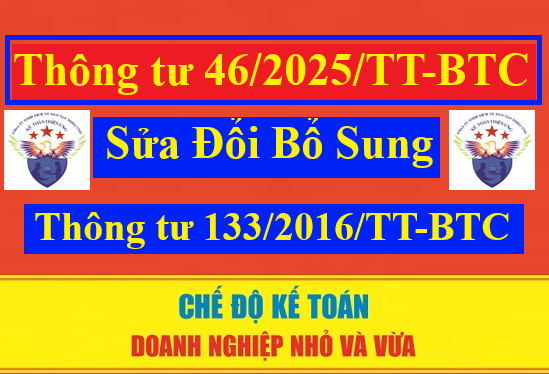

Ngày 20/6/2025 Bộ trưởng Bộ Tài chính ban hành Thông tư 46/2025/TT-BTC (có hiệu lực từ ngày 01/7/2025) sửa đổi, bổ sung, bãi bỏ các Thông tư trong lĩnh vực kế toán, kiểm toán để đẩy mạnh phân cấp, phân quyền và sắp xếp tổ chức chính quyền địa phương 02 cấp.
Căn cứ Điều 3 Thông tư 46/2015/TT-BTC sửa đổi, bổ sung một số điều của Thông tư 133/2016/TT-BTC hướng dẫn chế độ kế toán doanh nghiệp nhỏ và vừa.
Theo đó, từ ngày 01/7/2025 sửa đổi, bổ sung Điều 10 Thông tư 133/2016/TT-BTC về đăng ký sửa đổi kế toán doanh nghiệp nhỏ và vừa như sau:
Thông tư 46/2025/TT-BTC ban hành ngày 20/06/2025, có hiệu lực từ 01/7/2025.
Theo đó, từ ngày 01/7/2025 sửa đổi, bổ sung Điều 10 Thông tư 133/2016/TT-BTC về đăng ký sửa đổi kế toán doanh nghiệp nhỏ và vừa như sau:
Điều 3. Sửa đổi, bổ sung một số điều của Thông tư số 133/2016/TT-BTC ngày 26 tháng 8 năm 2016 của Bộ trưởng Bộ Tài chính hướng dẫn chế độ kế toán doanh nghiệp nhỏ và vừa
1. Sửa đổi tên của Điều 10 như sau:
“Điều 10. Sửa đổi Chế độ kế toán”.
2. Sửa đổi, bổ sung Điều 10 như sau:
“1. Đối với chứng từ kế toán và sổ kế toán
Doanh nghiệp áp dụng hệ thống chứng từ kế toán và sổ kế toán tại Phụ lục 3 và Phụ lục 4 ban hành kèm theo Thông tư này (không bắt buộc). Trường hợp để phù hợp với đặc điểm hoạt động sản xuất kinh doanh và yêu cầu quản lý, doanh nghiệp được thiết kế thêm hoặc sửa đổi, bổ sung biểu mẫu chứng từ kế toán và sổ kế toán so với biểu mẫu hướng dẫn tại Phụ lục 3 và Phụ lục 4 ban hành kèm theo Thông tư này. Biểu mẫu chứng từ kế toán và sổ kế toán của doanh nghiệp khi sửa đổi, bổ sung phải đảm bảo tuân thủ quy định tại Điều 16, các khoản 1, 2, 3, 4 của Điều 24 Luật Kế toán và phải phản ánh đầy đủ, kịp thời, trung thực, minh bạch, để kiểm tra, kiểm soát và đối chiếu được tài sản, nguồn vốn của doanh nghiệp.
2. Đối với hệ thống tài khoản kế toán
Doanh nghiệp áp dụng hệ thống tài khoản kế toán tại Phụ lục 1 ban hành kèm theo Thông tư này để phục vụ việc ghi sổ kế toán các giao dịch kinh tế phát sinh tại doanh nghiệp. Trường hợp để phù hợp với đặc điểm hoạt động sản xuất, kinh doanh và yêu cầu quản lý của đơn vị, doanh nghiệp được sửa đổi, bổ sung về tên, số hiệu, kết cấu và nội dung phản ánh của các tài khoản kế toán hướng dẫn tại Phụ lục 1 ban hành kèm theo Thông tư này. Việc sửa đổi, bổ sung đó phải đảm bảo phân loại và hệ thống hóa được các nghiệp vụ phát sinh theo nội dung kinh tế, không trùng lặp đối tượng, tuân thủ các nguyên tắc kế toán theo quy định và không được làm thay đổi hoặc ảnh hưởng đến các chỉ tiêu, thông tin trình bày trên báo cáo tài chính.
3. Đối với báo cáo tài chính
Doanh nghiệp áp dụng hệ thống báo cáo tài chính tại Phụ lục 2 ban hành kèm theo Thông tư này để lập và trình bày báo cáo tài chính của đơn vị. Trường hợp để phù hợp với đặc điểm hoạt động sản xuất kinh doanh và yêu cầu quản lý, doanh nghiệp được bổ sung thêm các chỉ tiêu của báo cáo tài chính hướng dẫn tại Phụ lục 2 ban hành kèm theo Thông tư này. Việc bổ sung đó phải đảm bảo quy định tại khoản 1, 2 Điều 29 Luật Kế toán và tuân thủ các nguyên tắc lập và trình bày báo cáo tài chính hướng dẫn tại Thông tư này. Doanh nghiệp phải thuyết minh trên báo cáo tài chính về những nội dung đã bổ sung so với biểu mẫu Báo cáo tài chính hướng dẫn tại Phụ lục 2 ban hành kèm theo Thông tư này.
4. Trường hợp doanh nghiệp có thực hiện sửa đổi, bổ sung về biểu mẫu chứng từ kế toán, sổ kế toán, tài khoản kế toán hoặc bổ sung thêm các chỉ tiêu của báo cáo tài chính theo quy định tại khoản 1, 2, 3 Điều này thì doanh nghiệp phải ban hành Quy chế hạch toán kế toán về các nội dung sửa đổi, bổ sung làm cơ sở cho doanh nghiệp thực hiện. Quy chế phải nêu rõ sự cần thiết của việc sửa đổi, bổ sung đó và trách nhiệm của doanh nghiệp trước pháp luật về các nội dung đã sửa đổi, bổ sung.
Trường hợp doanh nghiệp không sửa đổi, bổ sung về biểu mẫu chứng từ kế toán, sổ kế toán, tài khoản kế toán hoặc bổ sung thêm các chỉ tiêu của báo cáo tài chính theo quy định tại khoản 1, 2, 3 Điều này thì áp dụng hệ thống chứng từ kế toán, sổ kế toán, tài khoản kế toán và báo cáo tài chính hướng dẫn tại các Phụ lục 1, 2, 3, 4 ban hành kèm theo Thông tư này.
5. Trường hợp doanh nghiệp có đặc thù dẫn đến không thể bổ sung thêm hoặc cần sửa đổi các chỉ tiêu của báo cáo tài chính hướng dẫn tại Phụ lục 2 ban hành kèm theo Thông tư này thì báo cáo Bộ Tài chính để được hướng dẫn lập và trình bày báo cáo tài chính.”.
Thông tư 46/2025/TT-BTC ban hành ngày 20/06/2025, có hiệu lực từ 01/7/2025.
